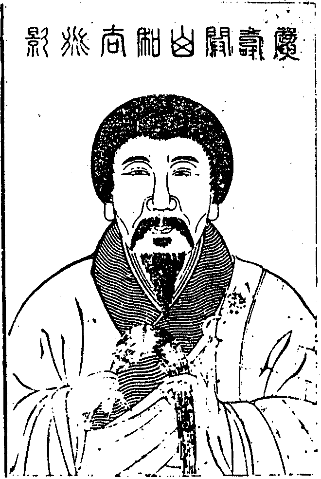

嘉興大藏經 第38冊
No.B425 即非禪師全錄 (25卷)
【清 如一說 明洞等編（依駒本印） 附佛祖圖】
第 1 卷

雪峰即非禪師道影讚
有臨濟之機用而不濫行棒喝有玅喜之波瀾而不虛施語言力救時弊疏通禪源凜凜乎道韻照冰雪煌煌乎法化懸朝暾灼破佛祖肝膽揭露衲僧頂門信為黃檗琦之嫡子徑山容之真孫者也。
即非禪師語錄序
向上一路千聖不傳又云向上一路千聖不言設有言傳猶如好肉剜瘡昔日老瞿曇未離兜率已降皇宮未出母胎度人已畢有何言哉因中下之機不了只得假雪山而悟道借波旬以張陳四十九年口吧吧地欲俾一切眾生個個成佛轉見不堪末後于多子塔前收竿罷釣屏絕言詮驀然拈花示眾以表無言殊知欲隱彌張千載之下有個多事婆羅門將無言之旨袖入諸夏名曰教外別傳不知有多少血氣男兒落他圈繢裏邇來插竿遍地道貫寰區茲即非禪師閩中林氏鬳齋先生之後裔也早年失怙至孝尊慈薙染之初遍參尊宿然後歸來久依費老人之錘拂丰姿挺特志操高尚于大火聚中逼得根深器界總成一箇非上座并不見更有山河大地也遂受隱元和尚之缽袋子有年元和尚仍以無言之旨佩入搏桑卻將赤幟樹千海壖扶起近代黃檗家風毒鼓震于豐城挽迴三百年前法運雖云一花初放五葉芬芳驅耕奪食虎頷捋鬚棒上成龍喝下翻身原讓臨濟兒孫師其人也元和尚鼻祖搏桑手札命師聖壽開堂號令人天師不逾時買舟東上豐主大悅刱廣壽山建寺顏曰福聚大開爐鞴鍛聖煉凡啟百世之徽猷豎千古之規鑒其黃檗一支不致寂寥矣時門人將師數十年衛法之苦心日積成帙稿寄南來嘉禾災棗附藏流通命予數語弁于簡端予秖知治世語言文字其格外提持威音那畔恨未夢見在兼未識師面不副來機只得應命茲惟序師之本色行履而師之法身向上事千聖出頭無有下筆處。
時
康熙三十三年夏蒲月節屆天中
賜進士及第
欽授翰林院修撰充纂修明史一統志兩館纂修官甲戌科會試同考沈廷文元洲氏拜題
敘
神龍韜藏於巨海以時起而澤物則變化無方有情且爾矧達道之世出者乎予叔即和尚少具超方之志挺卓不群性稟至孝因以孝聞自弱齡削[髟/采]後遍參知識苦工十餘祀出入內典吞吐百家其識弘其用博發為文字皆寓至理自謂識量依通未為究竟輒揮去卒力蒲團上復九載一日當臘月三十於撲焚處撞破勝熱面門打失自家鼻孔直下如火裏青蓮始得大事了畢既印可于黃檗隱大師甘活埋於雪峰古法窟道香[莫-大+艸]揜塞滿閻浮時節已彰皤然應聘出世于崇福繼開山于廣壽現身法海示大津梁上而王公碩德次而緇褐異宗聞名向化覿面歸依隨機攝受頓入直指堂奧愧賓風塵俗漢兼以山川問之未能躬承法誨祗從頒示尊錄中神領棒喝而撫膺自腆己爾重披二會新錄及勘辨機緣猶如那伽出海雲雨相隨於霎然雷奔電掣中令人脫黏解縛得大自在外於讚頌詩偈等篇不異化溥春工卷舒無蹟舉地皆成簇錦蒸霞非深得少林不傳之宗曷能闡古今未發之蘊哉然此猶言其觕未盡其徵以和尚之道之德足以陶三乘津九族起東山之正續昇濟北之未墮翼贊皇圖光揚聖教俾垂蔭於來際其視玄言機用特緒餘耳賓塵列子行曷敢為出世大人作先聲地第當見道之真不敢不為述其意而盡其言先德曰見善不揚非君子之操具金剛眼者自能鑒諸言外。
三山從子賓稽首拜撰
即非禪師全錄總目
即非禪師全錄卷之一
戊戌年十二月初七日本寺檀越王引何高材林守壂魏之琰林繼燰潘啟祚顧肇基薜柟何興楚何元吉何高楨盧國棟林春茂王儀等請
師就當山開堂師至座前拈請疏云靈山記囑一會儼然仰煩維那重新表白宣畢師指法座云須彌燈王來也遂作女人揖云謝如來降尊讓我出頭便陞拈香祝
聖竟復拈香云此瓣香十載從頂[寧*頁]上頓出一旦向胸襟中流出專申供養前住福建福州府福清縣
敕賜黃檗山萬福禪寺現住攝州慈雲山福元寺傳臨濟正脈第三十二世
本師上隱下元琦老和尚仰酬法乳之恩斂衣就座上首白椎何一粟居士問法幢初建為國祝釐如何是撐天拄地人師卓杖云金烏初出海何處不光輝進云與麼則接物利生活潑潑去也師云今日接得一箇進云唯此燈燈無盡自然萬古風光師云一任照天照地士禮拜師云且寄三十棒維那問六年雪嶺藏身處五葉重開聖壽阿直指單傳即不問開堂祝聖事如何師云杲日一輪紅進云恁麼則大地沐恩光師云闍黎卻具眼進云臨濟兒孫天然有在師打云更須識取臨濟始得道榮問昔日閩王輔弼雪峰法席今朝鎮主作聖壽金湯瞻依和尚開堂未審有何祥瑞師云輝天鑒地進云掀翻萬佛骨髓斬斷千聖頂[寧*頁]如何是一喝作金剛王寶劍師便打進云百獸魂飛膽喪野孤飲氣吞聲如何是一喝作踞地獅子師云照顧汝腦門進云展處彌綸法界收時毫髮無存如何是一喝作探竿影艸師云深辨來風進云佛祖窺覷無門人天瞻仰不及如何是一喝不作一喝用師云一任疑著進云四喝已蒙師展演中興祖業是如何師卓拄杖云會麼榮禮拜云聖壽祥雲映寶座金襴紫氣貫山門師云善哉善財童子乃云時節到來梅香雪裏因緣出現遍界優曇乃豎拂子云諸大德委悉麼此一枝原是靈山所拈的少林所開的西天東土奕葉相承自曹谿六傳至于臨濟萬紫千紅濟傳第三十葉至于天童馨香愈盛重傳徑山容師翁正榦獨攀翁傳黃檗琦老人一枝橫出老人傳與雪峰一頭陀當下產箇三祗果圓陀陀活潑潑含裏十虛該羅一切適纔諸上人所問的都在裏許山僧所答的也在裏許乃至三藏十二部一千七百則總在裏許更有諸佛諸祖說不到問答不到的亦在裏許山僧不會收拾拋擲多年今朝輥過者幾不消一捏依舊五葉重芳千枝競秀設有向根本上著得隻眼堪報不報之恩其或回睛轉腦鷂子過新羅了也茲承鎮主臨筵四眾雲集請陞此座為國開堂壽聖治樂有道之天福兆民崇至善之德只如同覺同證直下無私一句又作麼生擎展萬派百川歸巨海一輪紅日上榑桑上首結椎下座。
開爐結制魏爾潛居士捐金充知浴請上堂雪機問和尚以大地為爐烹庖佛祖鍛鍊人天只如沒面目漢子到來如何鉗鎚師打云棒頭有眼明如日進云恁麼則掀天揭地承師恩力去也師云舉頭天外誰是其人進云開爐結制已蒙指示如何是臨濟宗師云青天轟霹靂進云如何是曹洞宗師云虎之缺馬之馽進云如何是雲門宗師云腦後一輪紅進云如何是溈仰宗師打圓相云天下人跳不出進云如何是法眼宗師云大地沙門一隻眼進云五宗畢竟是同是別師云五五二十五僧禮拜云謝和尚答話師云汝是那一宗僧一喝師打云臨濟堂前半點頭乃云馬嘴象腮收歸欄廄銅頭鐵額超入紅爐這裏還有不費鉗鎚不窺鞭影的麼出來[跳-兆+孛]跳看山僧為汝證據其或大器晚成普請九旬齊努力人天佛祖結同參遂舉天童密雲老和尚上堂云今日禹門寺裏結制須與諸人一議不用諸人參禪不用諸人會理單單不用瞌睡若也瞌睡一棒打出骨髓莫言不道喝一喝下座師云這老漢年老心孤老婆太切徹骨相為恩大難酬子細觀來猶未盡善殊不知禪不參則道不悟理不會則事遍枯單單不瞌睡不墮無記則生亂想據令將來翻成鈍置何似新聖壽今日崇福寺裏結制亦不用與諸人一議禪任他參理任他會待他瞌睡送箇枕頭卻不敢動著何以如此不見道但得雪消去自然春到來且道與禹門相去多少老祖若聞必也點頭是事姑置只如今日魏檀越揮金請開選佛之場畢竟如何指示聽取一偈早晨法雨洗塵寰日出諸天展笑顏有相門中無相施福如滄海壽如山下座。
冬至日東京舶主林爾受魏爾潛潘雲仍顧長卿薛梅初何崑嵋何子謙何君騰諸檀越請上堂僧問葭管飛灰繡紋添線即且置不涉化機請為指示師云無奈東君漏洩何僧擬議師便打師乃云繡紋添一線葭管正飛灰不涉化機句觸著吼如雷好箇時節還有共轉法輪者麼出來助山僧應以此身得度者即現此身而為說法其或未然山僧又自應去也遂舉唯菴老叟船居曰船非水則不可行水非船則不可居必二者相資而後成宋濂無相居士則不然我非船何處不可行豈特水哉我非水何處不可居豈特船哉師云一人就事施設煇煌魏國之珠一人入理深譚賣弄趙城之璧山僧不識理事順水行舟拈出如意寶要與二翁鬥富大眾證明聽我舉似甲將船水費論評十分巧說不如行乙將船水都拈除長安雖樂非久居爭似我諸檀氣壓孫李蘇遨遊東海當西湖時乘隻葉閒來往飽看江山展畫圖法說竟恰也無更助一帆風到岸腰金仍掛古珊瑚有問如何西祖意崑崙山下石香爐卓拄杖下座。
佛成道日魏爾潛檀越薦兄請上堂爾潛問年來幾點思兄淚灑向崎江白日寒今日請和尚薦拔一句師云明星當午現潛禮拜云謝和尚慈悲師云夜半日頭紅僧問六年已脫千生夢忽悟明星作麼生師云山僧眼不花進云魏檀請師登寶座追薦一句是如何師云髑髏眼底春風動無影枝頭爛熳紅進云蒙師拔出無生路九品蓮花腦後開師云腦後一句作麼生僧作禮師便打若乙問眉間掛劍魔驚怕袖裏驪珠定有勛臨濟三玄即不問曹洞五位請師分師云從頭問將來進云如何是正中偏師云皂馬爛銀蹄進云如何是偏中正師云瓊花開鐵樹進云如何是正中來師云午夜雪山一點明進云如何是兼中至師云日月交輝進云如何是兼中到師云渾沌無竅進云五位已蒙師指示只如瞿曇失卻眼睛淨名開卻眼睛是同是別師云一合相不可得進云當陽一著無私照觸處莫非是本光師打云是偏是正乙禮拜師以拂子打圓相云大眾會麼釋迦老子于雪山午夜悟得這箇六祖于碓坊中踏著這箇百丈于钁頭下鋤著這箇溈山于木杓裏舀著這箇雪峰于飯籮邊淘著這箇雲峰于鬧市頭撞著這箇古今聖賢于日用中明得這箇本寺檀越于正因中信得這箇如上所說置之勿論信得這箇以何為驗試為舉看毓禎魏公在日發廣大心興隆三寶創建叢林告世數載有弟爾潛體兄之心檀度如舊茲適世尊睹星悟道之晨特設齋供養兼請上堂為薦乃兄施米百石以資冥福更願檀護與叢林同悠久者此亦幽明兩致其極誠希有也所謂大人具大見大智得大用顯揚奇特事須還過量人且道這箇有甚奇特能令人悟能令人信能令種種妙用皆從這箇流出未審這箇向甚麼處流出若是口吞佛祖的向未有這箇時一坐坐斷管取悟也不可得信也不可得踏也踏不著鋤也鋤不見舀也不上淘也不出撞也不著明也不得正恁麼時喚甚麼作佛祖喚甚麼作眾生喚甚麼作生死喚甚麼作涅槃誰為供養誰受薦拔乃喝一喝云若不得者一喝幾乎轉身不得身已轉也如何得令他同覺同證去以拂子向空中點云露出一星子水天上下明下座。
同門法兄木菴和尚請上堂僧問一佛出世萬佛讚揚如何是萬佛讚揚底句師云笑破虛空口進云只如赤肉團邊無位真人還讚得麼師云無位真人在甚麼處僧擬議師便打問聖壽峰頭掛紫雲賓主相對復何云少林一曲欣同調仲氏吹箎伯氏壎正與麼時如何是主中賓師云下座陪師兄進云如何是賓中主師云一朝權在手進云如何是賓中賓師云面上三斗塵進云如何是主中主師云佛祖立下風進云賓主已蒙師指示向上宗乘是如何師云還我賓主句來進云恁麼則一花五葉開愈秀同條各露一枝春師打云者一枝天下人有分乃云一佛出世萬佛讚揚一花開敷萬花周匝花黃花紫一般春前佛後佛無二道以無二之道廓人天未證之門揭佛祖不傳之妙直得古多寶新釋迦當下如鏡照鏡似空合空於中著得一隻眼方見三世佛祖脩多羅藏盡向此中流出天地日月萬象森羅盡向此中建立四生九有八難三途盡向此中隨流出沒從緣契證百工技藝一切有情盡向此中各隨根性悉得受用無物不周乾坤未可比其廣大一般奇特日月莫能喻其光華任他通身是口也讚歎不及正當主賓互換不落時機一句如何展演多寶塔中分半座萬花叢裏兩優曇下座。
雪天上堂以友居士問達磨面壁二祖斷臂和尚今日陞座雪裏如何安心師云還我一臂來進云我師親的意能有幾人知師云用知作麼進云空生若不巖中坐爭得天花動地來師云莫謗空生好乃云雪裏九年流出通身熱汗爐邊打坐竟日卓豎寒毛還有灰裏豆爆者麼試通消息看一僧云紅蓮雪裏開一僧云虛空雪裏點頭一僧云銀山鐵壁八面玲瓏師云欲得梅花香撲鼻還須徹骨一番寒卓拄杖下座。
立春日曇璲監寺請上堂僧問曹谿五葉桑林裏如何是長芳萬古春師云桃紅李白薔薇紫問著東君總不知進云須彌頂上無根樹為甚麼不犯春風花自開師云又被風吹別調中乃云雲門乾菌橛雨淋目炙久矣昨夜被山僧蹉手一捏捏碎瞿曇鼻孔迸出浩蕩春風吹得桃紅梅白遍界清香汝等諸人還曾嗅著也未卓杖云松花若也霑春力根在深巖也著開下座。
興福福濟三監寺仝請上堂澂一監寺問生從何來死從何去師云澂不清攪不濁進云承師開示腳底蓮花步步階師云一法通時萬法通乃云澂一蘊謙二禪德歲暮逼山僧上堂舉揚箇事若論箇事佛祖口閣壁上山僧如何舉揚因是讓之至再其請益堅不得已向第二門頭傍通線路曲順來宜諸大德好須採聽尺璧蘊于巨石勇者力攻而得之驪珠現于澂潭智者逆浪而探之間有懦怯之士若不另具一副手眼幾番苦心欲希冀此二寶譬如輟耕穫而望秋收無以異也或迷者而不知知而不能取取而不能用非惟孤負此寶抑亦自他俱失利濟耳世寶如是僧寶亦然如何是僧寶昔日唐皇親賞鑒欽延鎮國利人天下座。
除日若乙維那弘永書記同眾請上堂僧問今朝臘月三十日作麼生是今日事師展兩手云會麼進云某甲不會請和尚為說師云不是知音者徒勞話歲闌僧禮拜師云果然弘永問古人烹露地白牛與大眾分歲未審和尚今夜分箇甚麼師云與汝一箇鐵饅頭進云大眾謝和尚師云咬得破堪受人天供養乃舉雪峰敦和尚因僧問如何是佛曰把火照魚行進云如何是法曰唐人譯不出又云佛法已蒙師指示未審畢竟事如何曰臘月三十日師云古德答話不帶枝葉山僧隨例攀條倒行一令今朝臘月三十日諸人畢竟事作麼生只如唐人譯不出把火照魚行且道佛法落在甚麼處如此會得參學已竟報恩已畢其或不然三百六旬仍蹉過眉毛剔起又來年下座。
元旦祝聖上堂僧問格外乾坤大榑桑日月新春風吹破臘處處賀新正如何是最新一句師云一團和氣萬劫同春乃云萬年春一夢夢醒萬年新新羅▆打鼓日國賀新正艸木叢林俱作獅吼山河大地鼓舞歡呼發揮固有風光喚起一新氣象萬邦歌有道四海樂無為臥雲深處向不朝天聖恩廣被如何補答驀豎拂子云一枝劫外春無盡仰祝堯天舜日長下座。
解制監寺領魏之琰居士請上堂僧問如何是一印印泥師云瑕生了也進云如何是一印印水師云鵝王擇乳進云如何是一印印空師云無汝下手處問如何是奪境不奪人師云拔卻眼中釘進云如何是奪人不奪境師云日高猶未醒進云如何是人境兩俱奪師云拈卻無生國進云如何是人境俱不奪師云護取法王城進云人境已蒙師指示心空及第事如何師云空裏掛燈籠進云恁麼則人人有分去也師打云海上漫栽花乃云九十光陰一撮子五湖僧在一毫端遂彈指一聲云為汝諸人解制了也還有心空及第者麼三級浪高能變化風雷相送過龍門復舉趙州和尚因趙王來參州端坐不起次日帥來州下禪床受之侍者問曰昨日大王來為甚不下禪床州曰非汝所知上等人來我禪床上接中等人來下禪床接末等人來出三門外接不可目我王為中下人也師曰趙老恁麼接王可謂不失宗師體裁簡點將來未免因人上下山僧當時若在敢問趙州設有無等級人來又作麼生接管取趙州至今要起起不得要坐坐不成是事且止只如今日三島客九洲僧俱殿下重臨法會觀選佛場揭曉龍蛇溷雜凡聖交參畢竟如何分疏作何相接良久云萬派聲融滄海上萬年流水不知春下座。
癸卯秋仲五日省覲回唐辭眾上堂道榮問孝義全彰遽離雪峰法席因緣出現高踞聖壽猊床只如今日符到奉行師資慶會一句作麼生展演師云報恩須是忤逆兒進云栴檀圍繞栴檀樹獅子遊行獅子窩師云不勞讚歎進云殿下臨筵聽法曾承靈山付囑吾師機辯天縱不妨更借一問師云水流須到海雲起必為霖進云恁麼則解使人天迎杖錫直教龍象接金襴師云汝者一語翻成分外榮禮拜而退自信問吾師為法到崎丘接物應機已六秋幸遇因緣今出現杖挑明月上皇州人天交接則不問途中得力一句乞師開示師云一帆秋水上皇州進云恁麼則臨濟家風重振榑桑去也師云如何是臨濟一句僧喝師云者一喝落在甚麼處進云不從天得不從地生師云莫是從人得麼僧禮拜師一喝乃云見可則進知難則退逆川禪師云古德恁麼說話大似趨利避害取捨未忘所以山僧住此數載不敢妄動茲緣故國六十餘位宰官居士于前年郵啟聘山僧回唐為國開法不特感激道愛抑且熟處難忘尋修書報復許可來春今秋覲別黃檗老人理當敘謝白眾承崎主同四眾光臨證明舉似乃別古德云進則以道退亦以道以道進退誰曰不可雖然此猶是山僧分上諸人分上又作麼生道心相照千里如面忠孝持身供養無盡至于向上一著各自努力附贅一偈離此山門入國門千山萬水一乾坤我心如雨無遺點深謝檀那六載恩下座。